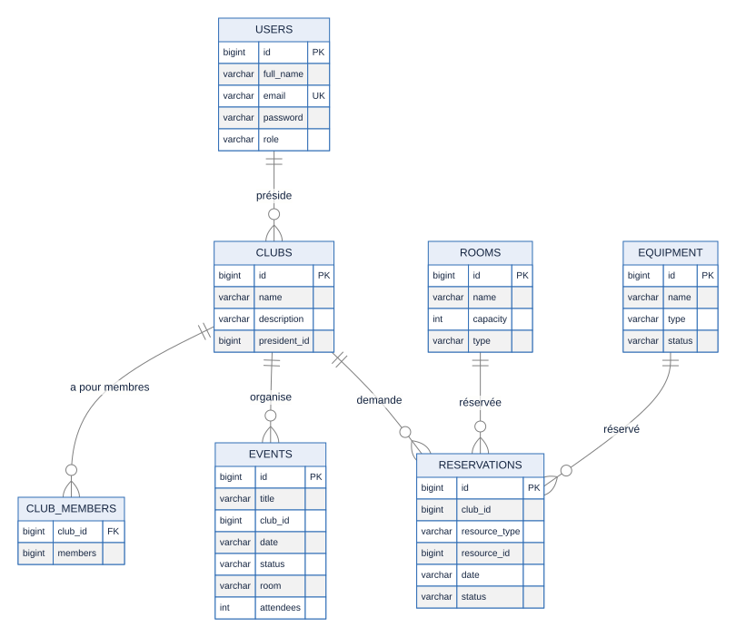
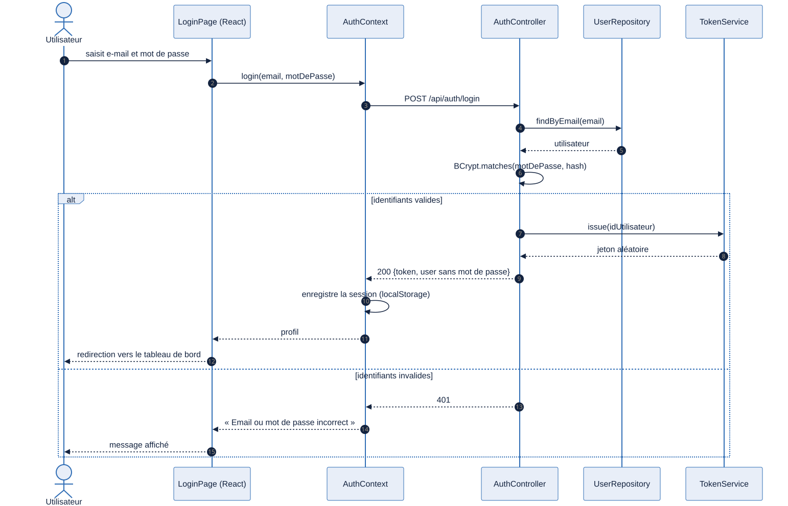

Ce rapport présente notre projet pour l'atelier de test logiciel : une plateforme web de gestion des clubs de l'ENICarthage. Il décrit le projet, ses besoins, son architecture et sa conception, puis les outils de test retenus et le plan de test, avec le responsable de chaque test.
| Objectif de l'atelier | Traitement dans ce rapport | Chap. |
|---|---|---|
| 1. Choisir un projet | Plateforme de gestion des clubs (Spring Boot, React, MySQL) : description, architecture et conception | 2, 4, 5 |
| 2. Présenter les besoins fonctionnels et non fonctionnels | 10 exigences fonctionnelles et 10 non fonctionnelles, avec leur criticité | 3 |
| 3. Utiliser un outil de test et de gestion des tests | Postman, Jest, Playwright, k6 ; GitHub pour les exigences, les tests et les anomalies | 6 |
| 4. Élaborer un plan de test | 5 tests fonctionnels, 5 non fonctionnels et 4 tests d'API, chacun avec son responsable | 7 |
La vie associative de l'ENICarthage repose sur de nombreux clubs. Leur gestion (création des clubs, organisation des événements, réservation des salles et du matériel, validation par l'administration) se fait aujourd'hui par des échanges dispersés, sans vue d'ensemble ni traçabilité. Une même salle peut être demandée deux fois pour la même date, et l'administration n'a pas de tableau de bord commun.
| Profil | Rôle technique | Ce qu'il peut faire |
|---|---|---|
| Visiteur | — | S'inscrire (adresse institutionnelle @enicar.tn) et se connecter |
| Membre de club | CLUB_MEMBER | Consulter les clubs et les événements, réserver une salle ou un équipement, suivre ses réservations, consulter son profil |
| Président de club | CLUB_PRESIDENT | Tout ce que fait un membre, plus créer et supprimer les événements de son club |
| Administration | ADMINISTRATOR | Créer les clubs et le compte de leur président, gérer les salles et les équipements, approuver ou rejeter les réservations |
| Module | Fonctionnalités |
|---|---|
| Authentification | Inscription, connexion, déconnexion, session conservée dans le navigateur |
| Tableau de bord | Nombre de clubs, d'événements, de salles et de membres ; événements récents ; clubs actifs |
| Clubs | Liste ; création d'un club avec le compte de son président ; suppression |
| Événements | Liste ; création pour son club (salle, date, nombre de participants) ; suppression |
| Salles et équipements | Liste avec capacité et type ; ajout par l'administration |
| Réservations | Demande d'un membre ; approbation ou rejet par l'administration |
| Compte | Profil, paramètres, notifications |
Chaque exigence a un identifiant unique, repris dans les cas de test pour assurer la traçabilité. La criticité (critique, majeure, mineure) oriente l'effort de test.
| Réf. | Exigence | Description | Criticité |
|---|---|---|---|
| EF-01 | Authentification | Connexion par e-mail et mot de passe ; le jeton et le profil sont conservés pendant la session ; déconnexion. En cas d'échec, un message explicite reste affiché. | Critique |
| EF-02 | Inscription d'un étudiant | Un étudiant s'inscrit avec un nom, une adresse institutionnelle @enicar.tn unique et un mot de passe d'au moins 6 caractères ; il reçoit le rôle CLUB_MEMBER (le rôle envoyé par le client est ignoré). | Majeure |
| EF-03 | Rôles et contrôle d'accès | Trois rôles : ADMINISTRATOR, CLUB_PRESIDENT, CLUB_MEMBER. Toute page exige une session. Clubs, salles, équipements et validation des réservations sont réservés à l'administrateur ; la création d'événements au président (pour son club) et à l'administrateur. | Critique |
| EF-04 | Tableau de bord | Statistiques (clubs, événements, salles, membres) et listes récentes calculées à partir des données réelles de la base. | Majeure |
| EF-05 | Gestion des clubs | Consultation par tous. Création par l'administrateur avec création du compte du président (e-mail unique, nom de club obligatoire). Suppression par l'administrateur. | Critique |
| EF-06 | Gestion des événements | Le président crée un événement pour son club : titre, salle existante, date future, participants entre 0 et la capacité de la salle. Statut initial PENDING. | Critique |
| EF-07 | Gestion des salles | L'administrateur ajoute une salle : nom, capacité strictement positive, type AMPHI / SALLE / LABO. | Majeure |
| EF-08 | Gestion des équipements | L'administrateur ajoute un équipement (nom, type) ; statut initial AVAILABLE. | Mineure |
| EF-09 | Réservation de ressources | Un membre réserve une ressource existante (salle ou équipement) à une date. Pas de double réservation d'une ressource à la même date. L'administrateur approuve ou rejette (PENDING → APPROVED / REJECTED). | Critique |
| EF-10 | Profil, paramètres et notifications | Consultation du profil ; paramètres et notifications fonctionnels (pas de données fixes). | Mineure |
| Réf. | Exigence | Catégorie | Description (mesurable) | Criticité |
|---|---|---|---|---|
| ENF-01 | Sécurité des identifiants | Sécurité | Mots de passe hachés (BCrypt). Le hash n'est jamais renvoyé par l'API ni stocké dans le navigateur. | Critique |
| ENF-02 | Sécurité et robustesse de l'API | Sécurité | Jeton vérifié à chaque requête ; non authentifié → 401 ; non autorisé → 403 ; entrée invalide → 4xx, jamais 500. | Critique |
| ENF-03 | Performance | Performance | 95 % des requêtes en moins de 500 ms avec 50 utilisateurs simultanés. | Majeure |
| ENF-04 | Utilisabilité et affichage mobile | Utilisabilité | Messages d'erreur visibles ; utilisable sur smartphone 360 px (zone de contenu ≥ 80 % de la largeur, sans défilement horizontal). | Majeure |
| ENF-05 | Compatibilité navigateurs | Compatibilité | Fonctionnement identique sous Edge (Chromium) et Firefox. | Mineure |
| ENF-06 | Maintenabilité | Maintenabilité | 0 erreur ESLint ; analyse PMD ; couverture des tests ≥ 70 % des instructions (frontend et backend). | Mineure |
| ENF-07 | Sécurité des dépendances | Sécurité | Aucune vulnérabilité connue de sévérité haute ou critique dans les dépendances de production. | Majeure |
| ENF-08 | Persistance des données | Fiabilité | Les données sont conservées après un redémarrage du backend. | Majeure |
| ENF-09 | Configuration sécurisée | Sécurité | Secrets hors du code source ; CORS limité au frontend ; pas de journalisation SQL en production. | Majeure |
| ENF-10 | Portabilité de la base de données | Portabilité | Fonctionne avec MySQL 8 et avec MariaDB (XAMPP), sans modification du code. | Mineure |
| Règle | Exigence |
|---|---|
| Seules les adresses se terminant par @enicar.tn peuvent s'inscrire ; mot de passe d'au moins 6 caractères | EF-02 |
| Un nouvel inscrit reçoit toujours le rôle CLUB_MEMBER, quel que soit le rôle envoyé | EF-02 |
| L'e-mail du président d'un nouveau club ne doit pas déjà exister | EF-05 |
| Un événement a lieu dans une salle existante, à une date future, avec 0 à N participants (N = capacité de la salle) | EF-06 |
| La capacité d'une salle est strictement positive | EF-07 |
| Une ressource ne peut être réservée qu'une fois par date (hors réservations rejetées) | EF-09 |
| Toute réservation commence à PENDING ; seule l'administration la passe à APPROVED ou REJECTED | EF-09 |
La plateforme suit une architecture en trois couches. Le navigateur exécute une application React (SPA) qui appelle une API REST Spring Boot. L'API applique la sécurité et les règles métier, puis lit et écrit les données dans MySQL par Spring Data JPA.
| Couche | Technologies | Rôle |
|---|---|---|
| Présentation | React 19, Vite 8, React Router 7, Axios, Tailwind CSS | Pages, navigation, appels à l'API, affichage responsive |
| Métier | Java 17, Spring Boot 4, Spring Web MVC, Spring Security, Lombok | API REST, authentification, contrôle d'accès, règles métier |
| Données | Spring Data JPA, Hibernate 7, MySQL 8 (ou XAMPP) | Persistance, schéma généré par Hibernate |
| Outillage | Maven, npm, Docker, Git / GitHub | Construction, dépendances, base de données de test, versionnement |
backend/src/main/java/com/example/backend/ ├── BackendApplication.java démarrage de Spring Boot ├── DataLoader.java données initiales (admin, président, club IEEE, salle, équipements) ├── security/ SecurityConfig, TokenService, TokenAuthenticationFilter authentification et règles d'accès ├── controller/ AuthController, ClubController, EventController, points d'entrée REST │ RoomController, EquipmentController, ReservationController ├── repository/ UserRepository, ClubRepository, EventRepository, … accès aux données (Spring Data JPA) ├── model/ User, Club, Event, Room, Equipment, Reservation entités JPA ├── dto/ ClubCreationRequest données reçues à la création d'un club └── web/ ApiError, ApiExceptionHandler erreurs renvoyées au client (400, 404, 409)
Chaque requête traverse le filtre de jetons, puis les règles d'accès de SecurityConfig, avant d'atteindre le contrôleur. Les contrôleurs vérifient les règles métier et renvoient des erreurs explicites (400, 404, 409) plutôt qu'une erreur serveur.
frontend/src/
├── main.jsx, App.jsx démarrage et routes (React Router)
├── api/ axios.js (client HTTP, jeton), errors.js (messages d'erreur)
├── context/ AuthContext.jsx, useAuth.js session de l'utilisateur
├── components/ Layout, Sidebar, ProtectedRoute, ErrorAlert
└── pages/ Login, Register, Dashboard, Clubs, Events, Rooms, Equipment,
Reservations, Profile, Settings, Notifications
ProtectedRoute redirige vers la page de connexion toute personne non connectée. Les pages affichent ou masquent les actions selon le rôle de l'utilisateur ; l'API applique de nouveau ces règles côté serveur.
| Méthode | Chemin | Description | Accès |
|---|---|---|---|
POST | /api/auth/register | Inscription d'un étudiant (rôle CLUB_MEMBER) | Public |
POST | /api/auth/login | Connexion : renvoie un jeton et le profil | Public |
GET | /api/clubs | Liste des clubs | Public |
POST | /api/clubs | Création d'un club et du compte de son président | ADMINISTRATOR |
DELETE | /api/clubs/{id} | Suppression d'un club | ADMINISTRATOR |
GET | /api/events | Liste des événements | Public |
POST | /api/events | Création d'un événement (statut PENDING) | CLUB_PRESIDENT, ADMINISTRATOR |
DELETE | /api/events/{id} | Suppression d'un événement | CLUB_PRESIDENT, ADMINISTRATOR |
GET | /api/rooms | Liste des salles | Public |
POST · DELETE | /api/rooms | Ajout et suppression d'une salle | ADMINISTRATOR |
GET | /api/equipment | Liste des équipements | Public |
POST · DELETE | /api/equipment | Ajout et suppression d'un équipement | ADMINISTRATOR |
GET | /api/reservations | Liste des réservations | Utilisateur connecté |
POST | /api/reservations | Demande de réservation d'une salle ou d'un équipement | Utilisateur connecté |
PUT | /api/reservations/{id}/status | Approbation ou rejet d'une réservation | ADMINISTRATOR |
Authorization: Bearer, et le filtre le vérifie à chaque requête.SecurityConfig ; une requête sans jeton reçoit 401, une requête d'un rôle non autorisé reçoit 403.

| Élément | Description |
|---|---|
| Acteur principal | Membre de club (le président hérite de ce cas) |
| Préconditions | Le membre est connecté ; la ressource existe |
| Scénario nominal | 1. Le membre ouvre « Réservations » et clique sur « Nouvelle réservation ». 2. Il choisit le type (salle ou équipement), la ressource et la date. 3. Le système vérifie que la ressource existe et qu'elle est libre à cette date. 4. Le système enregistre la réservation avec le statut PENDING et l'affiche. |
| Scénarios alternatifs | 3a. Ressource déjà réservée à cette date : message « Ressource déjà réservée », rien n'est enregistré. 3b. Ressource inexistante : message d'erreur. |
| Postcondition | Une réservation PENDING attend la décision de l'administration |
| Exigences | EF-09, EF-03 |

Les associations sont portées par des identifiants : un club référence son président (presidentId) et ses membres (members) ; un événement référence son club et sa salle ; une réservation référence son club et la ressource réservée (resourceType + resourceId).




Quatre outils de test sont retenus, chacun pour un niveau et un type de test, et un outil de gestion des tests. Deux d'entre eux ont une interface graphique où chaque test et son résultat sont visibles : Postman et Playwright (UI Mode).
| Outil | Nature | Interface | Utilisé pour | Tests | Responsable |
|---|---|---|---|---|---|
| Postman 12.8 | Logiciel de test d'API | Application graphique | Requêtes vers l'API REST et vérifications automatiques ; charge (onglet Performance) | API-01 à API-04, TNF-01, TNF-02 | M. Aziz Rouissi (API), M. Bouchahda (TNF) |
| Jest 30 + React Testing Library | Framework de test JavaScript | Terminal | Tests unitaires et de composants de l'interface React | TF-01, TF-02 | M. Hosni Missaoui |
| Playwright + UI Mode | Outil de test de bout en bout | Application graphique (UI Mode) ou terminal | Scénarios dans un vrai navigateur, Edge et Firefox, affichage smartphone | TF-03 à TF-05, TNF-03, TNF-04 | M. Hosni Missaoui (TF), M. Bouchahda (TNF) |
| k6 | Outil de test de charge | Terminal (Docker) | Simulation de 50 utilisateurs simultanés | TNF-01 | M. Bouchahda |
| GitHub | Outil de gestion des tests | Site web | Exigences, tests et anomalies (issues), campagnes (jalons), corrections (Pull Requests), tableau Projects | Tous | M. Aziz Rouissi |
Postman est un logiciel qui envoie des requêtes HTTP à une API et vérifie automatiquement les réponses. Les tests sont regroupés dans une collection organisée en dossiers ; chaque requête porte un script de vérifications écrit avec pm.test. Les jetons de connexion sont gardés dans les variables de la collection et passés d'une requête à la suivante.
npx newman run …).// Vérifications prévues pour API-01 (connexion valide)
pm.test("Code HTTP 200", () => pm.response.to.have.status(200));
pm.test("Un jeton est renvoyé", () => pm.expect(pm.response.json().token).to.be.a("string").and.not.empty);
pm.test("Le mot de passe n'est pas renvoyé", () => pm.expect(pm.response.json().user).to.not.have.property("password"));
// Vérification prévue pour TNF-01 (performance)
pm.test("Temps de réponse < 500 ms", () => pm.expect(pm.response.responseTime).to.be.below(500));
Jest exécute des tests JavaScript ; React Testing Library affiche un composant React dans un navigateur simulé (jsdom) et permet de le manipuler comme un utilisateur (saisir, cliquer). L'API est remplacée par une version simulée, ce qui isole le composant testé. Lancement : npm run test:unit dans le dossier frontend.
// Valeurs limites prévues pour TF-02 : mot de passe de 5 caractères refusé
test("5 caractères (limite - 1) : refusé sans appel à l'API", async () => {
await remplirInscription("abcde");
expect(screen.getByText("Mot de passe trop court (min. 6 caractères)")).toBeInTheDocument();
expect(api.post).not.toHaveBeenCalled();
});
Playwright pilote un vrai navigateur (Microsoft Edge et Firefox) et rejoue un parcours complet : interface React, API et base de données. Il peut simuler un écran de smartphone (360 × 800). Son UI Mode (npx playwright test --ui) est une interface graphique : arborescence des scénarios, exécution d'un clic, et pour chaque test une chronologie avec des captures de la page avant et après chaque action.
// Valeurs limites prévues pour TF-03 : 41 participants dans une salle de 40 places
await page.getByRole("button", { name: /nouvel événement/i }).click();
await champs.nth(3).fill("41");
await page.getByRole("button", { name: "Créer" }).click();
await expect(page.getByRole("alert")).toContainText("entre 0 et 40");
k6 simule des utilisateurs virtuels qui envoient des requêtes en même temps. Le scénario de TNF-01 monte à 50 utilisateurs en 15 secondes, reste à ce niveau 45 secondes puis redescend ; les seuils de l'exigence ENF-03 sont écrits dans le script.
export const options = {
stages: [{ duration: "15s", target: 50 }, { duration: "45s", target: 50 }, { duration: "10s", target: 0 }],
thresholds: { http_req_duration: ["p(95)<500"], http_req_failed: ["rate<0.01"] },
};
| Fonction | Réalisation dans GitHub |
|---|---|
| Référentiel des exigences | Une issue par exigence (EF-xx, ENF-xx), avec sa criticité |
| Tests rattachés aux exigences | Une issue par test, liée aux exigences qu'il vérifie et assignée à son responsable |
| Campagnes | Jalons (une campagne par version testée) |
| Anomalies | Une issue par anomalie, liée au test qui l'a détectée ; fermée par la Pull Request qui la corrige |
| Suivi | Tableau GitHub Projects : À faire → En cours → Corrigée → Re-testée → Fermée |
| Outil | Installation |
|---|---|
| Postman | Application téléchargée depuis postman.com ; la collection du projet s'ajoute par « Import » |
| Jest, React Testing Library, Playwright | Paquets npm déclarés dans frontend/package.json : npm install dans le dossier frontend, puis npx playwright install pour les navigateurs |
| k6 | Image Docker grafana/k6 : docker run --rm -v ./qa/perf:/scripts grafana/k6 run /scripts/charge-api.js |
| GitHub | Dépôt du projet ; ligne de commande gh pour automatiser les issues |
Ce plan suit la structure de la norme IEEE 829 / ISO/IEC/IEEE 29119-3. Il couvre les quatre niveaux de test et les types de test fonctionnels et non fonctionnels.
| Dans le périmètre | Hors périmètre |
|---|---|
| Authentification, inscription, rôles · clubs · événements · salles · équipements · réservations · tableau de bord · profil, paramètres, notifications · sécurité de l'API · performance · robustesse · affichage mobile · compatibilité · maintenabilité · dépendances · persistance · portabilité de la base | Déploiement en production ; envoi d'e-mails (non prévu) ; accessibilité avancée (lecteurs d'écran) |
Le plan retient 14 tests : 5 tests fonctionnels, 5 tests non fonctionnels et 4 tests d'API. Ils sont choisis en priorité sur les risques les plus élevés, de sorte que toutes les exigences critiques soient couvertes.
| Risque produit | Probabilité | Impact | Priorité | Tests prévus |
|---|---|---|---|---|
| Action d'administration par un utilisateur non autorisé | Élevée | Critique | P1 | API-02, TF-05 |
| Fuite des mots de passe | Moyenne | Critique | P1 | TNF-02, API-01 |
| Double réservation d'une salle | Moyenne | Majeur | P1 | API-03, TF-04 |
| Événement dépassant la capacité d'une salle | Moyenne | Majeur | P1 | TF-03 |
| Création d'un club avec un président déjà inscrit | Moyenne | Majeur | P1 | API-04 |
| Lenteur en période d'inscription | Faible | Majeur | P2 | TNF-01 |
| Mauvais affichage sur smartphone | Moyenne | Moyen | P2 | TNF-03 |
| Perte de données au redémarrage | Faible | Critique | P2 | TNF-05 |

| Niveau | Objectif | Tests | Outil |
|---|---|---|---|
| Unitaire | Vérifier chaque composant isolément (API simulée) | TF-01, TF-02 | Jest + React Testing Library |
| Intégration | Vérifier l'API avec la sécurité et la base de données réelles | TNF-02, API-01, API-02, API-03, API-04 | Postman |
| Système | Vérifier l'application complète dans un navigateur | TF-03, TF-05, TNF-01, TNF-03, TNF-04 | Playwright ; k6, Postman (onglet Performance) |
| Acceptation | Valider le besoin du point de vue de chaque profil | TF-04, TNF-05 | Navigateur + fiche de test ; Navigateur, API |
Ils vérifient ce que fait l'application : les règles métier des exigences fonctionnelles.
| Test | Objet | Résultat attendu | Niveau | Technique | Exigences | Responsable |
|---|---|---|---|---|---|---|
| TF-01 | Connexion avec des identifiants valides et invalides | Identifiants valides : accès au tableau de bord ; sinon message « Email ou mot de passe incorrect » | Unitaire | Partitions d'équivalence (identifiants valides / mot de passe erroné / e-mail inconnu) | EF-01 | M. Hosni Missaoui |
| TF-02 | Inscription : adresse institutionnelle et longueur du mot de passe | 5 caractères ou adresse non institutionnelle refusés ; 6 caractères et @enicar.tn acceptés, rôle CLUB_MEMBER | Unitaire | Valeurs limites (mot de passe de 5 / 6 caractères), partitions (@enicar.tn / @gmail.com) | EF-02 | M. Hosni Missaoui |
| TF-03 | Création d'un événement par le président dans la limite de capacité | 40 participants : événement créé avec le statut PENDING ; 41 : refus avec message | Système | Valeurs limites (40 / 41 participants pour une salle de 40 places) | EF-06 | M. Hosni Missaoui |
| TF-04 | Réservation d'une salle par un membre puis approbation par l'administration | La réservation passe de PENDING à APPROVED ; une seconde réservation de la même salle à la même date est refusée | Acceptation | Transitions d'états (PENDING → APPROVED / REJECTED) | EF-09 | M. Hosni Missaoui |
| TF-05 | Actions visibles selon le rôle (membre, président, administration) | Un membre ne voit ni création ni suppression ; le président gère les événements de son club ; l'administration gère clubs, salles et réservations | Système | Table de décision rôle × action | EF-03, EF-04 | M. Hosni Missaoui |
Ils vérifient comment se comporte l'application : performance, sécurité, utilisabilité, compatibilité et fiabilité.
| Test | Caractéristique | Objet | Résultat attendu | Outil | Exigences | Responsable |
|---|---|---|---|---|---|---|
| TNF-01 | Performance | Temps de réponse de l'API sous 50 utilisateurs simultanés | 95 % des requêtes en moins de 500 ms, moins de 1 % d'erreurs | k6, Postman (onglet Performance) | ENF-03 | M. Bouchahda |
| TNF-02 | Sécurité | Mot de passe haché et jamais renvoyé par l'API | Aucun champ password ni hash BCrypt dans les réponses ; mot de passe stocké haché | Postman | ENF-01 | M. Bouchahda |
| TNF-03 | Utilisabilité | Affichage sur smartphone (360 × 800) | Pas de défilement horizontal ; contenu sur au moins 80 % de la largeur | Playwright | ENF-04 | M. Bouchahda |
| TNF-04 | Compatibilité | Mêmes parcours sous Microsoft Edge et Firefox | Les scénarios TF-03 et TF-05 donnent le même résultat dans les deux navigateurs | Playwright | ENF-05 | M. Bouchahda |
| TNF-05 | Fiabilité | Données conservées après un redémarrage du serveur | Clubs, événements et réservations identiques avant et après le redémarrage | Navigateur, API | ENF-08 | M. Bouchahda |
Ils interrogent directement l'API REST avec Postman, sans passer par l'interface. Chaque requête porte ses vérifications (pm.test).
| Test | Requête et objet | Résultat attendu | Technique | Exigences | Responsable |
|---|---|---|---|---|---|
| API-01 | POST /api/auth/login : jeton si valide, 401 sinon | 200 avec jeton et profil ; 401 pour un mauvais mot de passe ; jamais 500 | Partitions d'équivalence | EF-01, ENF-02 | M. Aziz Rouissi |
| API-02 | Contrôle d'accès : sans jeton, jeton falsifié, mauvais rôle | Sans jeton ou jeton falsifié : 401 ; membre sur une action d'administration : 403 ; administrateur : 200 | Table de décision (sans jeton / falsifié / membre / administrateur) | EF-03, ENF-02 | M. Aziz Rouissi |
| API-03 | POST /api/reservations : double réservation refusée | Ressource libre : 200 et statut PENDING ; même salle à la même date : 409 ; ressource inexistante : 400 | Partitions (ressource libre / déjà réservée / inexistante) | EF-09 | M. Aziz Rouissi |
| API-04 | POST /api/clubs : création d'un club et de son président | Données valides : 200 et compte président créé ; e-mail déjà utilisé : 409 ; nom vide : 400 | Partitions (données valides / e-mail déjà utilisé / nom vide) | EF-05 | M. Aziz Rouissi |
| Famille | Technique | Tests |
|---|---|---|
| Statique | Revue des exigences et revue de code | Reformulation des besoins en critères mesurables ; revue du code de sécurité (TNF-02) |
| Boîte noire | Partitions d'équivalence | TF-01, TF-02, API-01, API-03, API-04 |
| Valeurs limites | TF-02 (mot de passe 5 / 6 caractères), TF-03 (40 / 41 participants) | |
| Table de décision | TF-05 (rôle × action), API-02 (sans jeton / falsifié / membre / administrateur) | |
| Transitions d'états | TF-04 (réservation PENDING → APPROVED / REJECTED, § 5.5) | |
| Expérience | Test exploratoire | TNF-05 (redémarrage du serveur) |
| Mesure | Charge et mise en page | TNF-01 (50 utilisateurs), TNF-03 (360 px), TNF-04 (deux navigateurs) |
| Membre | Rôle | Fonctionnels | Non fonctionnels | API | Total |
|---|---|---|---|---|---|
| Mohamed Aziz Rouissi | Chef d'équipe | — | — | API-01, API-02, API-03, API-04 | 4 |
| Mohamed Bouchahda | Membre | — | TNF-01, TNF-02, TNF-03, TNF-04, TNF-05 | — | 5 |
| Mohamed Hosni Missaoui | Membre | TF-01, TF-02, TF-03, TF-04, TF-05 | — | — | 5 |
| Total | 14 | ||||
La répartition suit les familles de tests : un membre pour les tests fonctionnels, l'autre pour les tests non fonctionnels, et le chef d'équipe pour les tests d'API. Chaque responsable écrit ses tests, les exécute, enregistre les résultats et signale les anomalies sur GitHub. Le chef d'équipe relit les tests, suit l'avancement dans le tableau de suivi et valide les critères de sortie.
| Exigence | Criticité | Tests qui la vérifieront |
|---|---|---|
| EF-01 Authentification | Critique | TF-01, API-01 |
| EF-02 Inscription d'un étudiant | Majeure | TF-02 |
| EF-03 Rôles et contrôle d'accès | Critique | TF-05, API-02 |
| EF-04 Tableau de bord | Majeure | TF-05 |
| EF-05 Gestion des clubs | Critique | API-04 |
| EF-06 Gestion des événements | Critique | TF-03 |
| EF-07 Gestion des salles | Majeure | hors périmètre de cette campagne |
| EF-08 Gestion des équipements | Mineure | hors périmètre de cette campagne |
| EF-09 Réservation de ressources | Critique | TF-04, API-03 |
| EF-10 Profil, paramètres et notifications | Mineure | hors périmètre de cette campagne |
| ENF-01 Sécurité des identifiants | Critique | TNF-02 |
| ENF-02 Sécurité et robustesse de l'API | Critique | API-01, API-02 |
| ENF-03 Performance | Majeure | TNF-01 |
| ENF-04 Utilisabilité et affichage mobile | Majeure | TNF-03 |
| ENF-05 Compatibilité navigateurs | Mineure | TNF-04 |
| ENF-06 Maintenabilité | Mineure | hors périmètre de cette campagne |
| ENF-07 Sécurité des dépendances | Majeure | hors périmètre de cette campagne |
| ENF-08 Persistance des données | Majeure | TNF-05 |
| ENF-09 Configuration sécurisée | Majeure | hors périmètre de cette campagne |
| ENF-10 Portabilité de la base de données | Mineure | hors périmètre de cette campagne |
| Critère | Définition |
|---|---|
| Entrée | Application compilée et démarrée ; base de test accessible ; exigences et cas de test publiés sur GitHub |
| Sortie | 100 % des cas exécutés ; aucune anomalie critique ou majeure ouverte ; 100 % des exigences critiques couvertes ; couverture des instructions ≥ 70 % ; p95 < 500 ms |
| Suspension | Environnement indisponible ou anomalie bloquante empêchant plus de 30 % des tests |
| Reprise | Correctif livré ; re-test de confirmation puis non-régression complète |
Cycle de vie d'une anomalie : Détectée → Confirmée → Corrigée → Re-testée → Fermée. Gravité : critique (sécurité, perte de données), majeure (fonction dégradée), mineure (gêne). Sur GitHub, chaque exigence, chaque cas de test et chaque anomalie est une issue ; une anomalie est liée à l'exigence concernée et au test qui l'a détectée, et la Pull Request qui la corrige la ferme. Les jalons représentent les campagnes de test.
Ce rapport présente la plateforme de gestion des clubs de l'ENICarthage : ses profils et ses fonctionnalités, ses 20 exigences, son architecture en trois couches et sa conception (cas d'utilisation, classes, données, séquences, états). Il présente aussi les outils de test retenus (Postman, Jest, Playwright, k6, avec GitHub pour la gestion des tests) et le plan de test : 14 tests, dont 5 fonctionnels confiés à Mohamed Hosni Missaoui, 5 non fonctionnels confiés à Mohamed Bouchahda et 4 tests d'API pris en charge par le chef d'équipe, Mohamed Aziz Rouissi. Toutes les exigences critiques sont couvertes par au moins un test.